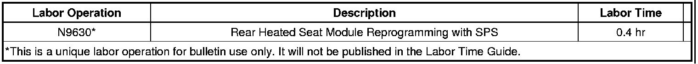

Electrical - No Crank/No Start/Discharged or Low Battery
TECHNICALBulletin No.: 09-08-50-017B
Date: February 11, 2010
Subject: No Crank, No Start, Discharged or Low Battery (Reprogram Rear Heated Seat Module)
Models:
2006-2010 Cadillac DTS
Built Prior to February 2, 2010
2007-2010 Cadillac Escalade, Escalade ESV
2007-2010 Chevrolet Suburban, Tahoe
2007-2010 GMC Yukon, Yukon XL
Built Prior to November 30, 2009
All Equipped with Rear Heated Seat RPO KA6
Supercede:
This bulletin is being revised to add build breakpoint dates. Please discard Corporate Bulletin Number 09-08-50-017A (Section 08 - Body and Accessories).
Condition
Some customers may comment about a no crank/no start condition or a discharged or low battery.
Note
This condition may be intermittent, therefore it is important to check if a revised calibration has been released on TIS2WEB for this concern, even if the condition cannot be duplicated at the dealer.
Cause
This condition may be caused by the rear heated seat module (RHSM) discharging the battery by keeping the serial data bus active, which creates a cumulative continuous draw of four amps on the battery after the vehicle is shut down, until the state of charge reaches three volts.
Correction
Important
DO NOT replace the RHSM or the battery for this concern.
Reprogram the RHSM with the latest software calibration.
Important
Select the correct calibration files for the appropriate vehicle configuration (body style) and RPO codes.
A revised calibration has been developed to address this condition. Technicians are to reprogram the RHSM using the Service Programming System (SPS) with the latest software available on TIS2WEB. Refer to the Service Programming System (SPS) procedures in SI.
When using a Tech 2(R) or a Multiple Diagnostic Interface (MDI) for reprogramming, ensure that it is updated with the latest software version.
During programming, the battery voltage must be maintained within the proper range of 12-15 volts. Only use the approved Midtronics(R) PSC 550 Battery Maintainer (SPS Programming Support Tool EL-49642) or equivalent during programming.
Warranty Information
For vehicles repaired under warranty, use:

Disclaimer